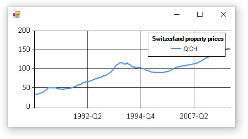

F# Data Toolbox: BIS Type Provider
The Bank for International Settlements (BIS) publishes statistics relevant for anaylsis. Most of the data is compiled in cooperation with central banks and other national authorities. More information can be found on the BIS statistics website. The data exploration can be done either through the BIS Statistics Explorer, BIS Statistics Warehouse or by downloading the raw CSV formatted files. The last option is very interesting from an automation perspective, as it allows you to use an analysis tool of your choice. The following statistics can be downloaded from here:
- Locational banking statistics
- Consolidated banking statistics
- Debt securities statistics
- Credit to the non-financial sector
- Debt service ratios for the private non-financial sector
- Property prices: selected series
- Property prices: long series
- Effective exchange rate indices
The BIS Type Provider extracts metadata out of the CSV file and generates an abstraction layer which simplifies filtering on the file. The main advantages are:
- Developer/research analyst analysis data through abstraction layer. No knowledge of CSV file parsing required.
- The IDE provides syntax highlighting based on the metadata extracted out of the CSV file. The consumer does not need to know the dimension and codes by heart.
- Compile-time errors are thrown in case dimensions or codes which do not exist in the metadata are used.
- Simple but powerful way of filtering the data (observations).
- One generic F# Type Provider for all of the above mentioned statistics.
The following examples show how to run the BIS Type Provider. First we download the Property prices: long series CSV file as the structure of this data is very simple and perfect for this demo. Firstly (see code block below), the “PropertyPrice” type must be defined. By doing this, the BIS Type Provider analysis the CSV file and generates the PropertyPrice.ObservationFilter plus one type per dimension of the property price data. In this case the types “Frequency” and “Reference Area” are generated and each of them contains generated fields per dimension member. As shown in the picture below, the metadata is reflected in the code. With this, we have full IntelliSense support and compile-time checks!

It requires only 3-4 lines of code to filter out a certain observation out of the data. The last part of the code builds up a line chart for the data we are looking for. I’m using the FSharp.Charting for the visualization.
1: 2: 3: 4: 5: 6: 7: 8: 9: 10: 11: 12: 13: 14: 15: 16: 17: 18: 19: 20: |
|
And this is the output of this code.

Let’s take one step further and analyse data of a much more complex dataset. The CBS file contains more records and dimensions than the Property prices dataset. The following piece of code filters out certain observations on Switzerland vis-à-vis Bahamas and Singapore and plots the outcome in a chart. Same as for the previous example, the CSV file is analysed by the BIS Type Provider and relevant types are generated.
1: 2: 3: 4: 5: 6: 7: 8: 9: 10: 11: 12: 13: 14: 15: 16: 17: 18: 19: 20: 21: 22: 23: 24: 25: 26: |
|

The cbs.Filter() function returns a sequence of observations and their values for all periods. With F# you can easily slice out and aggregate data. In this code snippet we use the same filter as above and sum the values of 2000-Q1 of Bahamas and Singapore.
1: 2: 3: 4: 5: 6: |
|
Full name: BisProvider.PropertyPrice
from Microsoft.FSharp.Collections
Full name: Microsoft.FSharp.Collections.Seq.map
Full name: Microsoft.FSharp.Collections.Seq.filter
type MeasureAttribute =
inherit Attribute
new : unit -> MeasureAttribute
Full name: Microsoft.FSharp.Core.MeasureAttribute
--------------------
new : unit -> MeasureAttribute
Full name: Microsoft.FSharp.Collections.Seq.find
Full name: Microsoft.FSharp.Collections.Seq.sum